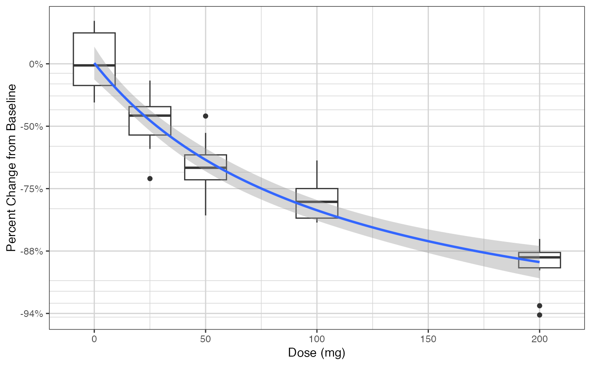
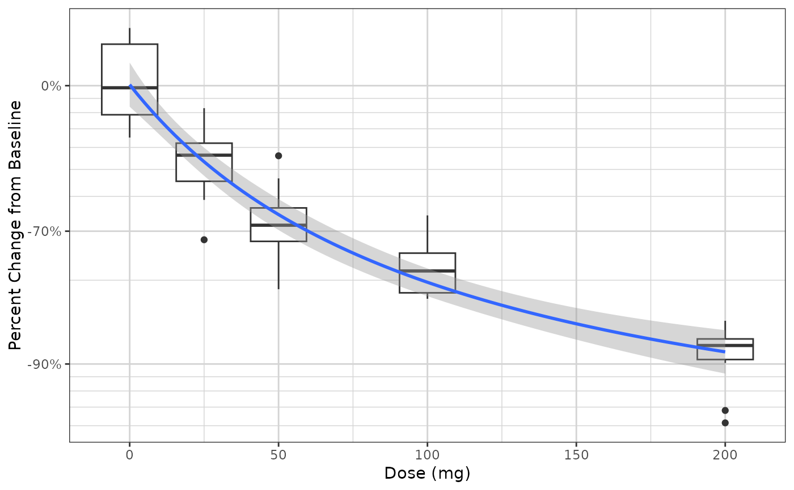

xgx_stat_smooth and xgx_geom_smooth produce smooth fits through continuous or categorical data.
For categorical, ordinal, or multinomial data use method = polr.
This wrapper also works with nonlinear methods like nls and nlsLM for continuous data.
xgx_geom_smooth_emax uses minpack.lm::nlsLM, predictdf.nls, and stat_smooth to display Emax model fit to data
xgx_stat_smooth(
mapping = NULL,
data = NULL,
geom = "smooth",
position = "identity",
...,
method = NULL,
formula = NULL,
se = TRUE,
n = 80,
span = 0.75,
n_boot = 200,
fullrange = FALSE,
level = 0.95,
method.args = list(),
na.rm = FALSE,
orientation = "x",
show.legend = NA,
inherit.aes = TRUE
)
xgx_geom_smooth(
mapping = NULL,
data = NULL,
geom = "smooth",
position = "identity",
...,
method = NULL,
formula = NULL,
se = TRUE,
n = 80,
span = 0.75,
fullrange = FALSE,
level = 0.95,
method.args = list(),
na.rm = FALSE,
orientation = "x",
show.legend = NA,
inherit.aes = TRUE
)
xgx_geom_smooth_emax(
mapping = NULL,
data = NULL,
geom = "smooth",
position = "identity",
...,
method = "nlsLM",
formula,
se = TRUE,
n = 80,
span = 0.75,
fullrange = FALSE,
level = 0.95,
method.args = list(),
na.rm = FALSE,
orientation = "x",
show.legend = NA,
inherit.aes = TRUE
)Set of aesthetic mappings created by `aes` or `aes_`. If specified and `inherit.aes = TRUE` (the default), it is combined with the default mapping at the top level of the plot. You must supply mapping if there is no plot mapping. Warning: for `method = polr`, do not define `y` aesthetic, use `response` instead.
The data to be displayed in this layer. There are three options:
If NULL, the default, the data is inherited from the plot data as specified in the call to ggplot.
A data.frame, or other object, will override the plot data. All objects will be fortified to produce a data frame. See fortify for which variables will be created.
A function will be called with a single argument, the plot data. The return value must be a data.frame., and will be used as the layer data.
Use to override the default geom. Can be a list of multiple geoms, e.g. list("point","line","errorbar"), which is the default.
Position adjustment, either as a string, or the result of a call to a position adjustment function.
other arguments passed on to layer. These are often aesthetics, used to set an aesthetic to a fixed value, like color = "red" or size = 3. They may also be parameters to the paired geom/stat.
method (function) to use, eg. lm, glm, gam, loess, rlm. Example: `"polr"` for ordinal data. `"nlsLM"` for nonlinear least squares. If method is left as `NULL`, then a typical `StatSmooth` is applied, with the corresponding defaults, i.e. For datasets with n < 1000 default is loess. For datasets with 1000 or more observations defaults to gam.
formula to use in smoothing function, eg. y ~ x, y ~ poly(x, 2), y ~ log(x)
display confidence interval around smooth? (TRUE by default, see level to control)
number of points to evaluate smoother at
Controls the amount of smoothing for the default loess smoother. Smaller numbers produce wigglier lines, larger numbers produce smoother lines.
number of bootstraps to perform to compute confidence interval, currently only used for method = "polr", default is 200
should the fit span the full range of the plot, or just the data
The percentile for the confidence interval (should fall between 0 and 1). The default is 0.95, which corresponds to a 95 percent confidence interval.
Optional additional arguments passed on to the method.
If FALSE, the default, missing values are removed with a warning. If TRUE, missing values are silently removed.
The orientation of the layer, passed on to ggplot2::stat_summary.
Only implemented for ggplot2 v.3.3.0 and later. The default ("x") summarizes y values over
x values (same behavior as ggplot2 v.3.2.1 or earlier). Setting orientation = "y" will
summarize x values over y values, which may be useful in some situations where you want to flip
the axes, e.g. to create forest plots. Setting orientation = NA will try to automatically
determine the orientation from the aesthetic mapping (this is more stable for ggplot2 v.3.3.2
compared to v.3.3.0).
logical. Should this layer be included in the legends? NA, the default, includes if any aesthetics are mapped. FALSE never includes, and TRUE always includes.
If FALSE, overrides the default aesthetics, rather than combining with them. This is most useful for helper functions that define both data and aesthetics and shouldn't inherit behaviour from the default plot specification, e.g. borders.
ggplot2 plot layer
nlsLM uses nls.lm which implements the Levenberg-Marquardt
algorithm for fitting a nonlinear model, and may fail to converge for a
number of reasons. See ?nls.lm for more information.
nls uses Gauss-Newton method for estimating parameters,
and could fail if the parameters are not identifiable. If this happens
you will see the following warning message:
Warning message:
Computation failed in `stat_smooth()`:
singular gradient
nls will also fail if used on artificial "zero-residual" data,
use nlsLM instead.
predictdf.nls for information on how nls confidence intervals are calculated.
# Example with nonlinear least squares (method = "nlsLM")
Nsubj <- 10
Doses <- c(0, 25, 50, 100, 200)
Ntot <- Nsubj*length(Doses)
times <- c(0,14,30,60,90)
dat1 <- data.frame(ID = 1:(Ntot),
DOSE = rep(Doses, Nsubj),
PD0 = stats::rlnorm(Ntot, log(100), 1),
Kout = exp(stats::rnorm(Ntot,-2, 0.3)),
Imax = 1,
ED50 = 25) %>%
dplyr::mutate(PDSS = PD0*(1 - Imax*DOSE/(DOSE + ED50))*exp(stats::rnorm(Ntot, 0.05, 0.3))) %>%
merge(data.frame(ID = rep(1:(Ntot), each = length(times)), Time = times), by = "ID") %>%
dplyr::mutate(PD = ((PD0 - PDSS)*(exp(-Kout*Time)) + PDSS),
PCHG = (PD - PD0)/PD0)
gg <- ggplot2::ggplot(dat1 %>% subset(Time == 90),
ggplot2::aes(x = DOSE, y = PCHG)) +
ggplot2::geom_boxplot(ggplot2::aes(group = DOSE)) +
xgx_theme() +
xgx_scale_y_percentchangelog10() +
ggplot2::ylab("Percent Change from Baseline") +
ggplot2::xlab("Dose (mg)")
gg +
xgx_stat_smooth(method = "nlsLM", formula = y ~ E0 + Emax*x/(ED50 + x),
method.args = list(
start = list(Emax = -0.50, ED50 = 25, E0 = 0),
lower = c(-Inf, 0, -Inf)
),
se = TRUE)
#> Warning: Ignoring unknown parameters: `n_boot`

gg +
xgx_geom_smooth_emax()
#> Warning: Formula not specified.
#> Using default formula y ~ E0 + Emax*x/(ED50 + x),
#> initializing E0, Emax, and ED50 to 1,
#> and setting lower bound on ED50 to 0
#> Warning: Ignoring unknown parameters: `n_boot`

if (FALSE) {
# example with ordinal data (method = "polr")
set.seed(12345)
data = data.frame(x = 120*exp(stats::rnorm(100,0,1)),
response = sample(c("Mild","Moderate","Severe"), 100, replace = TRUE),
covariate = sample(c("Male","Female"), 100, replace = TRUE)) %>%
dplyr::mutate(y = (50 + 20*x/(200 + x))*exp(stats::rnorm(100, 0, 0.3)))
# example coloring by the response categories
xgx_plot(data = data) +
xgx_stat_smooth(mapping = ggplot2::aes(x = x, response = response,
colour = response, fill = response),
method = "polr") +
ggplot2::scale_y_continuous(labels = scales::percent_format())
# example faceting by the response categories, coloring by a different covariate
xgx_plot(data = data) +
xgx_stat_smooth(mapping = ggplot2::aes(x = x, response = response,
colour = covariate, fill = covariate),
method = "polr", level = 0.80) +
ggplot2::facet_wrap(~response) +
ggplot2::scale_y_continuous(labels = scales::percent_format())
}